Snap layouts for KDE Plasma 6.
Snap bar, screen edges, window magnet and keyboard shortcuts.
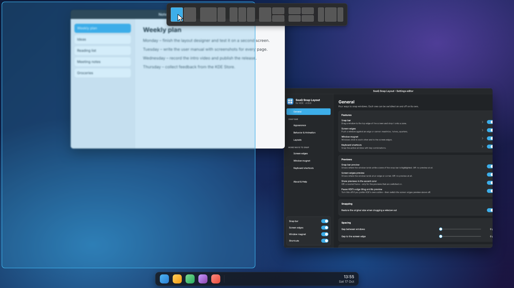
Everything SeaQ Snap Layout can do, page by page – from the first snap to your own layouts.
1Orange numbers in a screenshot point to a control. The list below the picture explains each one.
Button Grey labels are text you see on the screen: buttons, switches, menu entries.
command Monospaced text is typed into a terminal.
SeaQ Snap Layout brings snap layouts to KDE Plasma 6. Drag a window towards the top edge of the screen, a bar with layouts slides down, and you drop the window onto the zone where it should go. Since version 1.7 there are three more ways to snap – each one can be switched on and off on its own.
The snap bar only appears while you move a window. It never takes space on your screen otherwise.
While a zone is highlighted, a translucent rectangle in the accent color shows on the desktop exactly where the window will land – including gaps and panels. Move away from the bar and the preview disappears.
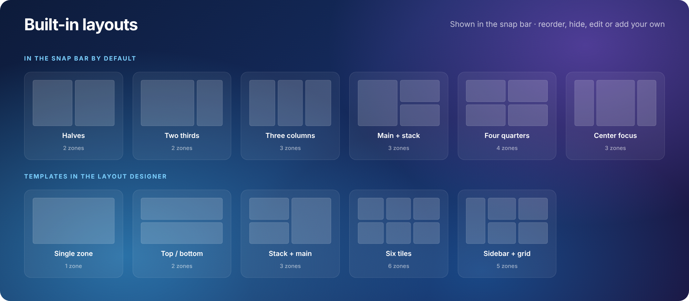
SeaQ Snap Layout is a KWin script. It installs into your home folder, needs no administrator rights and adds no background program.
| Requirement | Details |
|---|---|
| Desktop | KDE Plasma 6 (KWin 6) – Wayland or X11 |
| Distribution | Any: Fedora, Arch, openSUSE, KDE neon, Kubuntu, Debian … |
| Extra packages | None – everything it needs ships with Plasma |
kdesnaplayout-<version>.kwinscript from the Releases page.# install kpackagetool6 --type KWin/Script --install kdesnaplayout-1.9.0.kwinscript # update to a newer version kpackagetool6 --type KWin/Script --upgrade kdesnaplayout-1.9.0.kwinscript # switch it on kwriteconfig6 --file kwinrc --group Plugins --key kdesnaplayoutEnabled true qdbus6 org.kde.KWin /KWin reconfigure
Three movements, about two seconds.
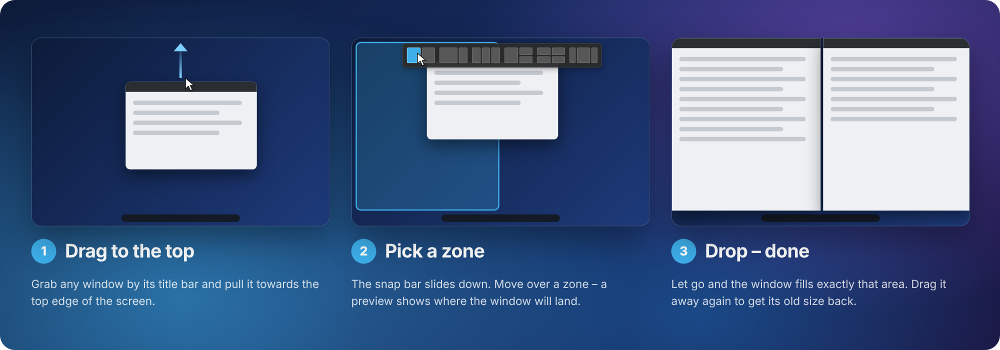
Move the cursor away from the bar, or release the window anywhere outside it. Nothing is snapped and the bar slides back up.
Grab a snapped window and drag it away – it returns to the size it had before snapping. You can turn this off on the General page.
Normal, resizable windows. Dialogs, fullscreen windows and apps on your exclusion list never show the snap bar.
The bar opens on the screen under the cursor, and zones fill that screen’s free area – panels are left uncovered.
A KWin script has no app icon of its own. Its settings are reached through the gear icon in System Settings, which opens a small quick menu.
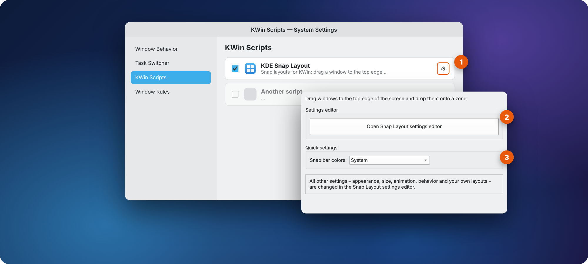
3Snap bar colors switches the snap bar between System, Light and Dark without opening the editor. Everything else – appearance, size, animation, behavior and your own layouts – lives in the settings editor.
One window, eight pages. Every change is saved and applied immediately – there is no Apply button.
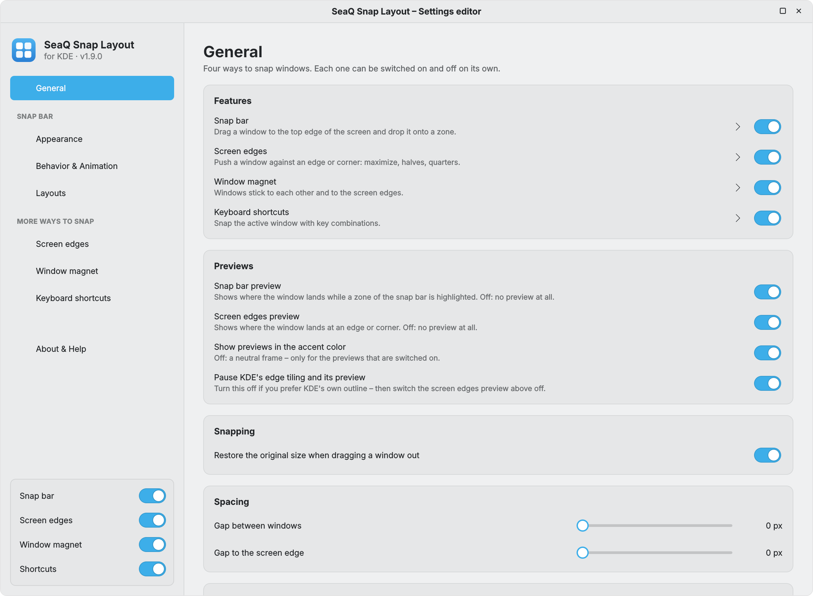
1 2 3 4 5 6 7Choose which ways to snap you want, control the previews and leave room between windows.
| Setting | What it does | Default |
|---|---|---|
| 1Features | Four independent switches: Snap bar, Screen edges, Window magnet, Keyboard shortcuts. The arrow next to each one opens its page. The same switches sit at the bottom of the sidebar. | all on |
| 2Previews | Snap bar preview and Screen edges preview, each on its own – off means no preview at all. Accent color – off draws a neutral frame. Pause KDE's edge tiling hides KDE's own outline. | all on |
| 3Restore the original size when dragging a window out | A snapped window that you drag away gets its earlier size back – also after snapping with the edges or the keyboard. | On |
| Gap between windows | Space between neighbouring zones (0 – 48 px). Used by the bar, the edges, the shortcuts and – if you like – the magnet. | 0 px |
| Gap to the screen edge | Space between the zones and the edges of the free screen area (0 – 48 px). | 0 px |
| Excluded applications | Window classes that are never snapped – one per line (commas and semicolons work too). Not case-sensitive. | empty |
krita or steam) is what you enter here.Colors, size and shape of the snap bar. The live preview at the top shows every change at once.
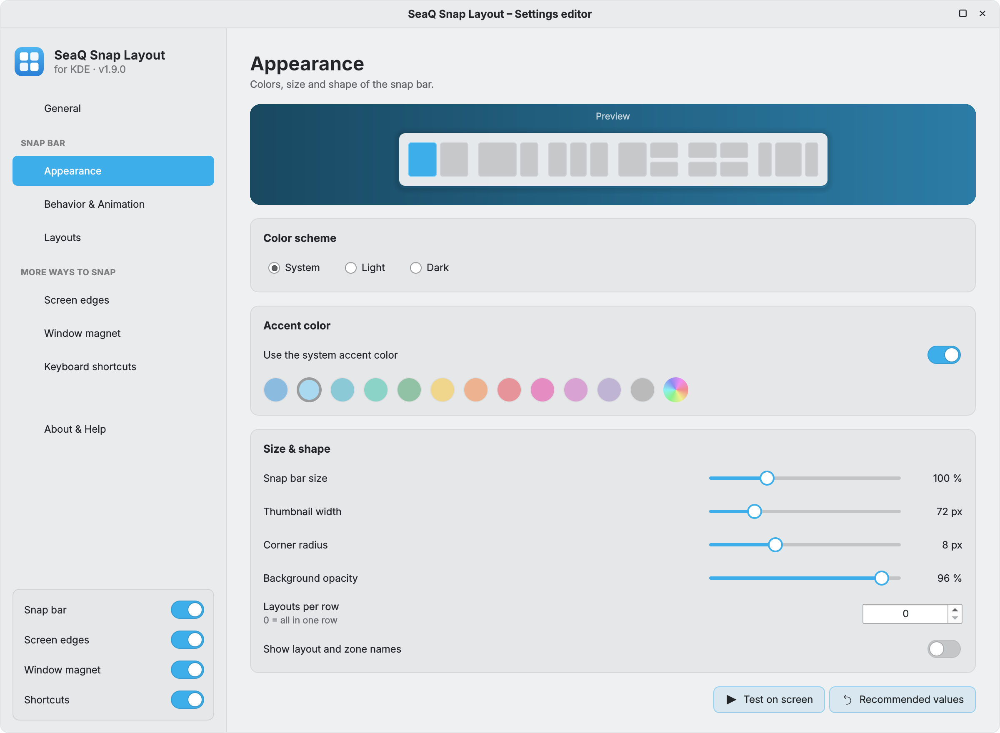
1 2 3 4 5 6 7 8 9| Size & shape | What it does | Default | Range |
|---|---|---|---|
| Snap bar size | Scales the whole bar – handy on high-resolution screens. | 100 % | 60 – 200 % |
| Thumbnail width | Width of each layout picture; the height follows your screen’s shape. | 72 px | 48 – 160 px |
| Corner radius | Roundness of the bar. 0 gives square corners. | 8 px | 0 – 24 px |
| Background opacity | How see-through the bar background is. | 96 % | 40 – 100 % |
A few combinations of the appearance settings.
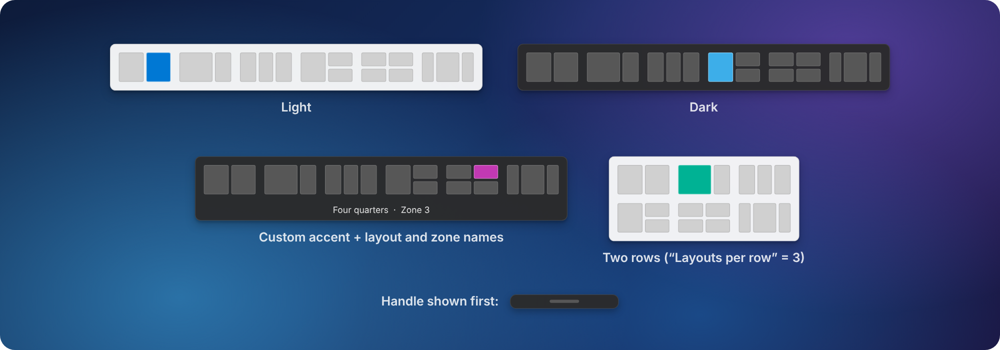
#3daee9 into the hex field.#3daee9When the bar appears, when it hides again and how it moves. The default values are based on Windows 11.
| Showing | What it does | Default | Range |
|---|---|---|---|
| ATrigger distance from the top edge | How close the cursor must get to the top edge before the full bar opens. | 24 px | 2 – 200 px |
| Show a small handle first | Shows the handle on the way up, so the bar never pops up by surprise. | On | On / Off |
| BDistance at which the handle appears | Distance from the top edge at which the handle appears. | 140 px | 20 – 400 px |
| CActive width along the top edge | Only this centered part of the top edge reacts. 100 % = the whole width. | 100 % | 10 – 100 % |
| Delay before showing | Waiting time before the bar opens. Prevents opening while passing by. | 40 ms | 0 – 600 ms |
| Hiding | What it does | Default | Range |
|---|---|---|---|
| DDistance before the bar hides again | How far you can move below the bar before it closes – a safety margin. | 56 px | 0 – 300 px |
| Delay before hiding | Waiting time after leaving that area before the bar slides up. | 150 ms | 0 – 1000 ms |
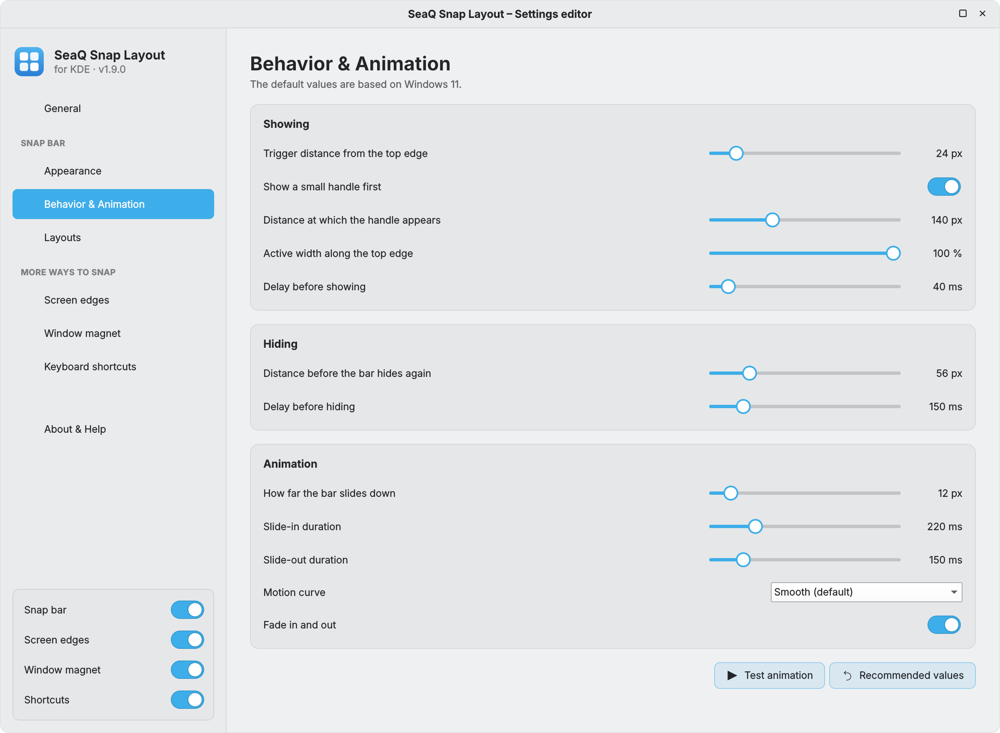
1 2 3 4| Animation | What it does | Default | Range |
|---|---|---|---|
| EHow far the bar slides down | Distance between the top of the free screen area and the bar when it is open. | 12 px | 0 – 150 px |
| Slide-in duration | How long the bar takes to slide down. | 220 ms | 0 – 1000 ms |
| Slide-out duration | How long it takes to slide back up. Shorter feels snappier. | 150 ms | 0 – 1000 ms |
| Motion curve | The character of the movement – see the curves below. | Smooth | 6 curves |
| Fade in and out | Fades the bar while it slides. | On | On / Off |
Each curve has a matching reverse for sliding back up, so hiding feels like showing played backwards.
Choose which layouts appear in the snap bar and in which order.
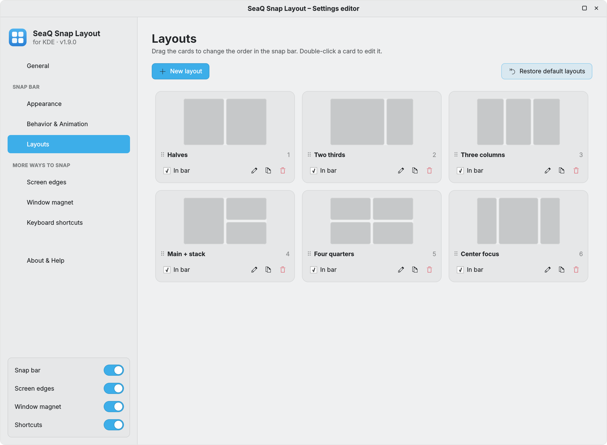
1 2 3 4 5 6 7 8 9Split the screen any way you like – up to 16 zones per layout.
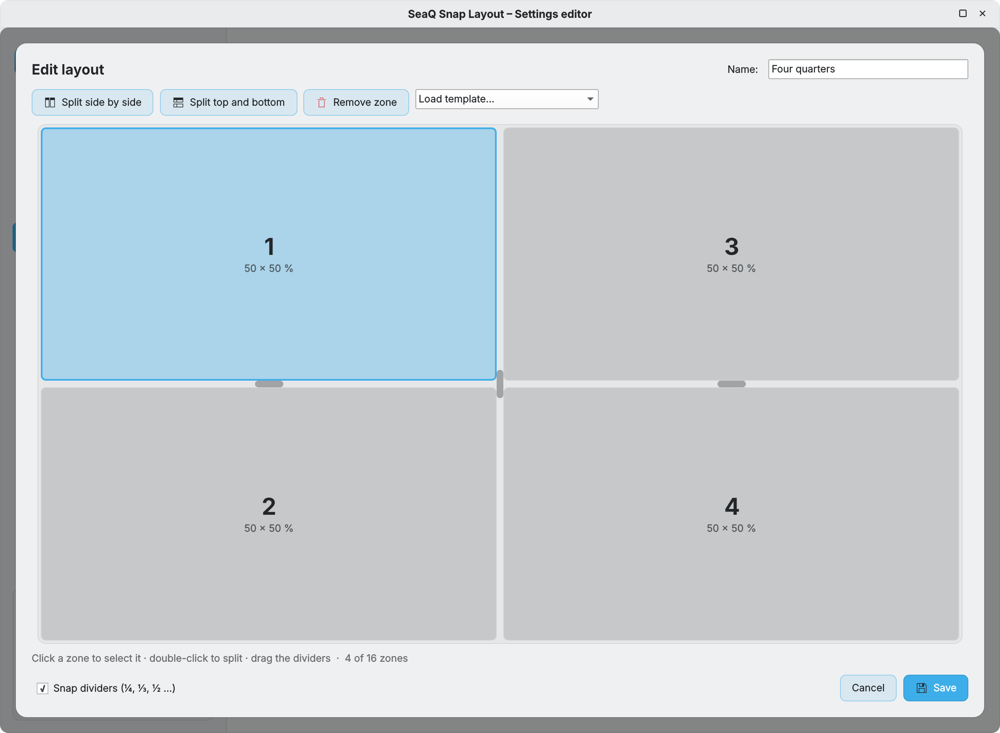
1 2 3 4 5 6 7 8 9 10Push a window against an edge or a corner of the screen and it fills that part. Works with or without the snap bar.
Edges – the middle of the left or right edge gives a half, the bottom edge the bottom half, the top edge maximizes (or what you choose).
Corners – the outer part of each edge (20 % by default) gives the quarter in that corner.
A small push – the window has to rest against the edge for 60 ms, so passing by does nothing.
The edges always look at what is already snapped. Halves and quarters never cover a snapped window, and the top edge only fills the free space above it.
Nothing snapped below → the top edge maximizes.
A quarter sits at the bottom → only the top half is filled.
| Setting | What it does | Default | Range |
|---|---|---|---|
| Use screen edges | Main switch, independent of the snap bar. | On | On / Off |
| Top edge | What the top edge does. | Maximize | Maximize · Fullscreen · Top half · Off |
| Left and right edge | Half of the screen. | On | On / Off |
| Bottom edge | Bottom half. | On | On / Off |
| Corners | Quarter of the screen. | On | On / Off |
| Smart fill | Fit around windows that are already snapped. | On | On / Off |
| Distance to the edge | How close the cursor has to get to the edge. | 4 px | 1 – 40 px |
| Push delay | How long the window has to rest against the edge. 0 = at once. | 60 ms | 0 – 600 ms |
| Corner size | Part of each side that counts as corner. | 20 % | 5 – 40 % |
| Hold to fill | Held longer at the edge, grow up to the next window. | On · 700 ms | 200 – 2000 ms |
While you move or resize a window, its edges stick to nearby windows and to the screen edges. Works without the snap bar and without the screen edges.
| Setting | What it does | Default | Range |
|---|---|---|---|
| Use the window magnet | Main switch. | On | On / Off |
| Snap distance | How close an edge has to come before it clicks into place. Larger = stronger magnet. | 16 px | 2 – 64 px |
| Resistance against overlapping | A window stops at the edge of another one and only lets go once you push it this far in. 0 = windows can overlap freely. | 48 px | 0 – 200 px |
| Stick to other windows | Edges line up with the edges of other visible windows on the same screen. | On | On / Off |
| Stick to the screen edges | Edges line up with the free screen area (panels are respected). | On | On / Off |
| Also while resizing | The edge you drag sticks too – the other edges stay where they are. | On | On / Off |
| Keep the gap between windows | Windows stop at Gap between windows from the General page instead of touching. | Off | On / Off |
Windows that touch share their edge. Resize one of them and the others follow live – nothing overlaps, no gap opens, and the gap between them stays as it was.
| Setting | What it does | Default |
|---|---|---|
| Resize touching windows together | The shared edge of every window that faces the resized one moves along. Edges on the screen border are never linked. | On |
| Keep stacked windows in line | Windows above each other keep their left and right edges together, windows side by side their top and bottom edges. | On |
| Shake to let go | Shake the mouse while resizing and the other windows jump back. | On |
| Fade the other windows | While resizing, windows that do not follow are shown transparent. | On |
Snap the active window with the keyboard. These are normal KDE global shortcuts – you also find them in System Settings → Shortcuts → KWin.
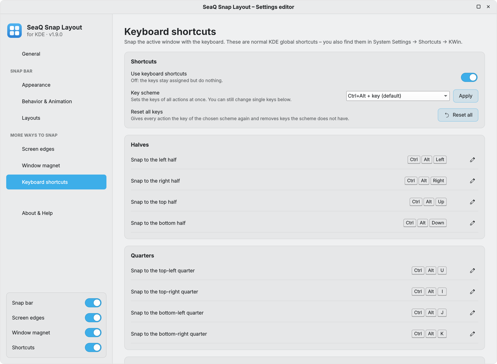
1 2 3 4SeaQ Snap Layout asks KDE’s shortcut service before it sets a key. If another action already has it, an orange card names the owner – for example “Ctrl+Alt+F is used by Show Calendar”:
The 16 snapping actions with their keys in the default scheme and in the number-block scheme. The four on/off actions have no key by default (page 20).
| Action | Default – Ctrl+Alt | Number block |
|---|---|---|
| Halves | ||
| Snap to the left half | Ctrl+Alt+Left | Ctrl+Alt+Num+4 |
| Snap to the right half | Ctrl+Alt+Right | Ctrl+Alt+Num+6 |
| Snap to the top half | Ctrl+Alt+Up | Ctrl+Alt+Num+8 |
| Snap to the bottom half | Ctrl+Alt+Down | Ctrl+Alt+Num+2 |
| Quarters | ||
| Snap to the top-left quarter | Ctrl+Alt+U | Ctrl+Alt+Num+7 |
| Snap to the top-right quarter | Ctrl+Alt+I | Ctrl+Alt+Num+9 |
| Snap to the bottom-left quarter | Ctrl+Alt+J | Ctrl+Alt+Num+1 |
| Snap to the bottom-right quarter | Ctrl+Alt+K | Ctrl+Alt+Num+3 |
| Thirds | ||
| Snap to the left third | Ctrl+Alt+D | – |
| Snap to the center third | Ctrl+Alt+F | – |
| Snap to the right third | Ctrl+Alt+G | – |
| Snap to the left two thirds | Ctrl+Alt+E | – |
| Snap to the right two thirds | Ctrl+Alt+Y | – |
| Window | ||
| Maximize or restore | Ctrl+Alt+Return | Ctrl+Alt+Num+5 |
| Center the window | Ctrl+Alt+C | Ctrl+Alt+Num+0 |
| Restore the size before snapping | Ctrl+Alt+- | – |
Same keys, other modifiers – shown for Snap to the left half. No shortcuts removes all keys.
| Scheme | Example |
|---|---|
| Meta+Ctrl+Alt + key | Meta+Ctrl+Alt+Left |
| Meta + key (KDE style) | Meta+Left – replaces Plasma’s own quick tiling keys |
| Meta+Shift + key | Meta+Shift+Left |
| Ctrl+Shift+Alt + key | Ctrl+Shift+Alt+Left |
| Ctrl+Alt + number block | Ctrl+Alt+Num+4 – thirds and Restore get no key |
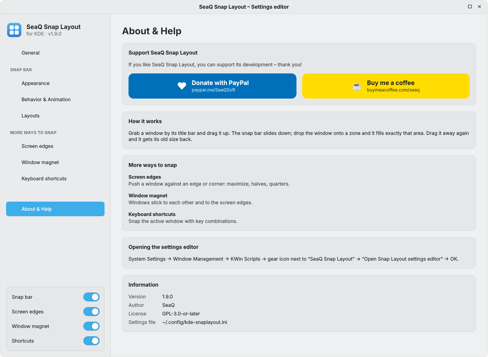
Support – Donate with PayPal (paypal.me/SeaQSoft) and Buy me a coffee (buymeacoffee.com/seaq) open your browser. Below: how snapping works, the other ways to snap, how to open the editor, plus:
Four more actions have no key by default, so they never clash with your own shortcuts. Give them a key on the Keyboard shortcuts page or in System Settings → Shortcuts → KWin (search for “Snap Layout”).
| Action | What it does |
|---|---|
| Snap bar on/off | Pauses or resumes the snap bar – the same as its switch in the sidebar. |
| Screen edges on/off | Pauses or resumes the screen edges. |
| Window magnet on/off | Pauses or resumes the window magnet. |
| Test the snap bar | Plays the snap bar on the current screen. |
The settings editor, the quick menu, the shortcut names and the layout names follow your system language (System Settings → Region & Language). 62 languages are included – all European languages plus Chinese (simplified and traditional), Japanese, Korean, Hindi, Bengali, Tamil, Telugu, Marathi, Gujarati, Punjabi, Urdu, Arabic, Hebrew, Persian, Indonesian, Malay, Vietnamese, Thai, Filipino, Georgian, Armenian and more. Right-to-left languages are mirrored automatically.
i18n folder of the repository – one line per text. Corrections and new languages are welcome as pull requests.All defaults at a glance. Recommended values on each page restores them for that page.
| General | |
|---|---|
| Snap bar · Screen edges · Window magnet · Shortcuts | all on |
| Previews (bar, edges) | On |
| Previews in the accent color | On |
| Restore original size | On |
| Gap between windows | 0 px |
| Gap to the screen edge | 0 px |
| Excluded applications | none |
| Appearance | |
| Color scheme | System |
| System accent color | On |
| Snap bar size | 100 % |
| Thumbnail width | 72 px |
| Corner radius | 8 px |
| Background opacity | 96 % |
| Layouts per row | 0 (one row) |
| Layout and zone names | Off |
| Behavior | |
|---|---|
| Trigger distance | 24 px |
| Small handle first | On |
| Handle distance | 140 px |
| Active width | 100 % |
| Delay before showing | 40 ms |
| Hide distance | 56 px |
| Delay before hiding | 150 ms |
| Animation | |
| Slide distance | 12 px |
| Slide-in duration | 220 ms |
| Slide-out duration | 150 ms |
| Motion curve | Smooth |
| Fade in and out | On |
| Layouts in the bar | |
| Halves · Two thirds · Three columns · Main + stack · Four quarters · Center focus | |
| Screen edges | |
|---|---|
| Top edge | Maximize |
| Sides · bottom · corners | On |
| Smart fill | On |
| Distance · push delay · corner | 4 px · 60 ms · 20 % |
| Window magnet | |
| Snap distance | 16 px |
| Windows · screen edges · resizing | On |
| Keep the gap | Off |
| Resistance | 48 px |
| Sticky edges · in line · shake · fade | On |
| Keyboard | |
| Key scheme | Ctrl+Alt + key |
Check that the script is ticked in KWin Scripts and that Active is on in the editor. Make sure the app is not on your exclusion list and that you drag a normal, resizable window by its title bar. If Active width along the top edge is below 100 %, move towards the middle of the top edge.
Plasma’s own edge actions or snap zones are still active. Switch on Pause KDE's edge tiling and its preview (Screen edges page) and Pause KDE's snap zones while the magnet is on (Window magnet page) – both are on by default.
Check the Shortcuts switch and that the key is shown on the page. If another program grabs the key first, choose a different scheme or key.
KWin keeps loaded scripts in memory. Log out and back in once. The About & Help page shows the running version.
After Open Snap Layout settings editor you have to click OK (or Apply). The editor appears about one second later.
The script folder was removed while KWin still listed it. Install the .kwinscript file again, then log out and back in.
Yes. The bar opens on the screen under the cursor and zones are calculated for that screen.
Collect the log and open an issue on GitHub:
journalctl --user -b | grep kdesnaplayout | tail -n 30
| Path | Contents |
|---|---|
~/.config/kde-snaplayout.ini | All settings of the editor and your layouts. Copy it to move your setup to another PC. |
~/.config/kglobalshortcutsrc → [kwin] | The keys of the shortcuts (managed by KDE). |
~/.config/kwinrc → [Script-kdesnaplayout] | The two quick-menu values (editor button, snap bar colors). |
~/.local/share/kwin/scripts/kdesnaplayout | The installed script. |
In KWin Scripts, click the trash icon next to SeaQ Snap Layout and then Apply. Or in a terminal:
kpackagetool6 --type KWin/Script --remove kdesnaplayout
rm ~/.config/kde-snaplayout.ini # optional: delete your settings
SeaQ Snap Layout is free software: you can redistribute it and/or modify it under the terms of the GNU General Public License, version 3 or (at your option) any later version. It is distributed in the hope that it will be useful, but without any warranty.